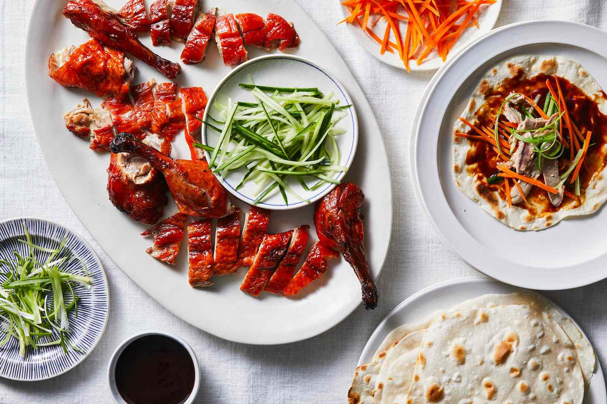
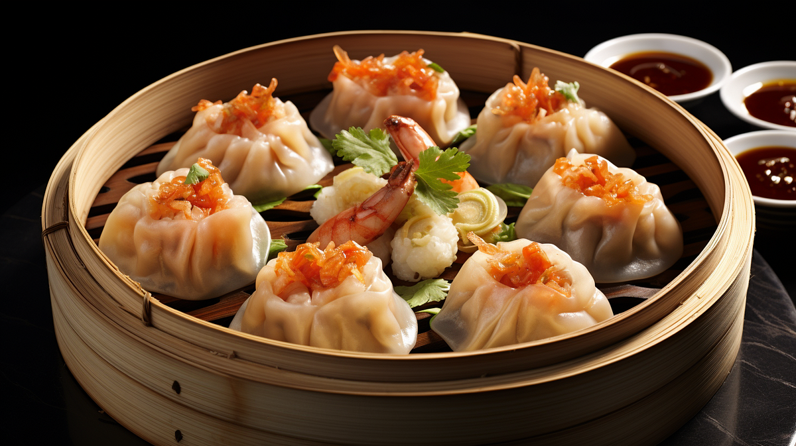
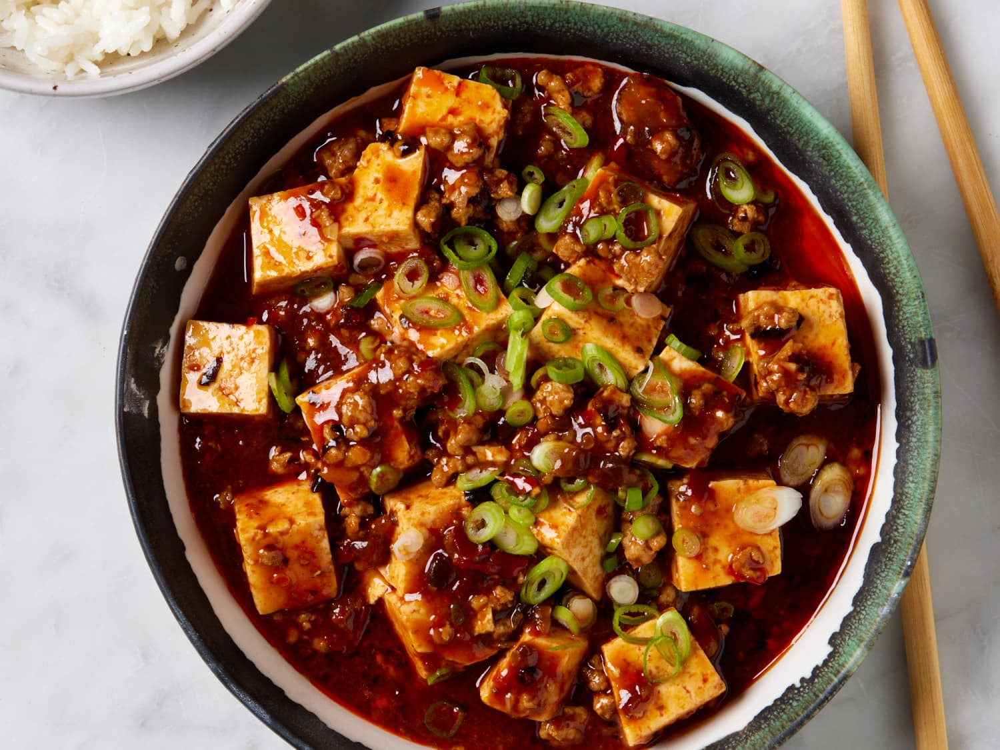
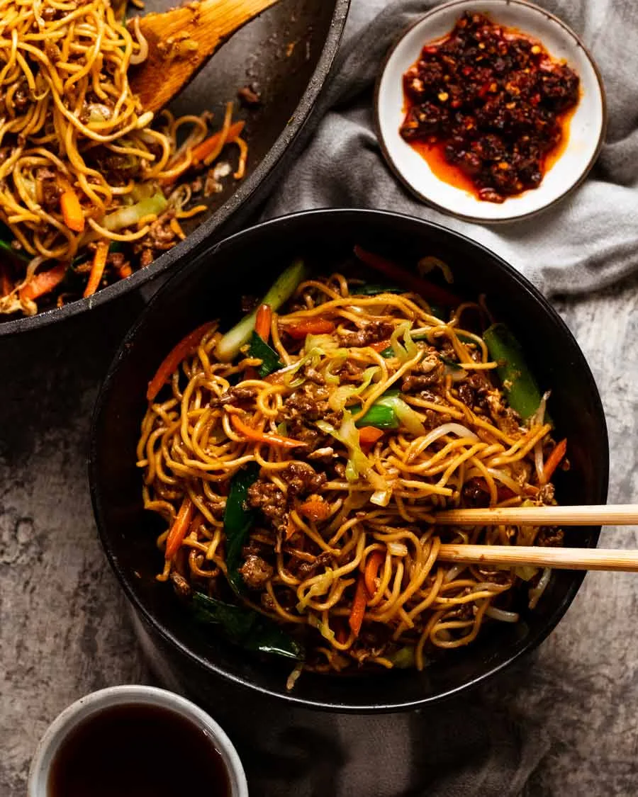

Peking Duck
Roasted duck with crispy skin, served with pancakes, cucumber, and hoisin sauce.
Ingredients and Steps
Ingredients:
- 1 whole duck (about 5 pounds)
- 2 tablespoons honey
- 2 tablespoons soy sauce
- 1 tablespoon rice vinegar
- 1 tablespoon Chinese five-spice powder
- 1 teaspoon salt
- 1 teaspoon ground white pepper
- 1 bunch green onions, sliced
- Hoisin sauce
- Mandarin pancakes or Chinese-style pancakes
Steps:
- Preheat your oven to 425°F (220°C).
- Rinse the duck thoroughly and pat it dry with paper towels. Prick the skin all over with a fork, being careful not to pierce the meat.
- In a small saucepan, combine the honey, soy sauce, and rice vinegar. Heat over low heat until the honey is dissolved.
- Rub the duck all over with the Chinese five-spice powder, salt, and white pepper. Brush the duck with the honey mixture.
- Place the duck on a roasting rack in a roasting pan. Roast in the preheated oven for about 1 hour and 30 minutes, or until the skin is crispy and the meat is cooked through. Baste the duck with the honey mixture every 30 minutes.
- Remove the duck from the oven and let it rest for 10 minutes before carving.
- Serve the Peking duck with green onions, hoisin sauce, and mandarin pancakes. Enjoy your delicious Peking Duck!

Dim Sum
A variety of small dishes like dumplings, buns, and rolls.
Ingredients and Steps
Ingredients:
- 1/2 pound ground pork
- 1/2 cup shrimp, chopped
- 2 tablespoons soy sauce
- 1 tablespoon sesame oil
- 1 tablespoon minced ginger
- 2 garlic cloves, minced
- 1 cup napa cabbage, finely chopped
- Wonton wrappers
Steps:
- In a large bowl, combine ground pork, chopped shrimp, soy sauce, sesame oil, ginger, garlic, and napa cabbage.
- Place a small spoonful of filling in the center of each wonton wrapper. Fold and seal the edges.
- Steam the dumplings in a bamboo steamer for about 8-10 minutes, or until cooked through.
- Serve with soy sauce or your favorite dipping sauce.

Kung Pao Chicken
Stir-fried chicken with peanuts, vegetables, and chili peppers.
Ingredients and Steps
Ingredients:
- 1 pound boneless, skinless chicken breasts, cut into bite-sized pieces
- 3 tablespoons soy sauce
- 2 tablespoons rice vinegar
- 1 tablespoon hoisin sauce
- 1 teaspoon sesame oil
- 2 cloves garlic, minced
- 1 tablespoon cornstarch
- 1/4 cup peanuts
- 2-3 dried red chili peppers
- 1 red bell pepper, diced
- 1 green bell pepper, diced
- 2 green onions, chopped
Steps:
- In a bowl, mix soy sauce, rice vinegar, hoisin sauce, sesame oil, and minced garlic. Add the chicken pieces and toss to coat. Let it marinate for at least 15 minutes.
- In a large skillet or wok, heat a bit of oil over medium-high heat. Add the marinated chicken and cook until browned and cooked through.
- Add the dried red chili peppers, bell peppers, and green onions to the skillet. Stir-fry for a few minutes until the vegetables are tender-crisp.
- Stir in the peanuts and cook for another 1-2 minutes.
- Serve hot with steamed rice.

Sweet and Sour Pork
Pork with a tangy sauce made from vinegar and sugar.
Ingredients and Steps
Ingredients:
- 1 pound pork tenderloin, cut into bite-sized pieces
- 1/2 cup cornstarch
- 2 eggs, beaten
- 1/2 cup all-purpose flour
- 1/4 cup ketchup
- 1/4 cup rice vinegar
- 1/4 cup soy sauce
- 1/4 cup sugar
- 1/2 cup pineapple chunks
- 1 green bell pepper, diced
- 1 red bell pepper, diced
- Vegetable oil for frying
Steps:
- Dredge the pork pieces in cornstarch, then dip them in the beaten eggs, and finally coat with flour.
- Heat vegetable oil in a deep skillet or wok over medium-high heat. Fry the pork pieces until golden and crispy. Drain on paper towels.
- In a saucepan, combine ketchup, rice vinegar, soy sauce, and sugar. Cook over medium heat until the sauce thickens.
- Add the pineapple chunks and bell peppers to the sauce. Cook for a few minutes until the vegetables are tender.
- Toss the fried pork pieces in the sauce until evenly coated. Serve hot with steamed rice.

Mapo Tofu
Spicy tofu with ground meat, often served with rice.
Ingredients and Steps
Ingredients:
- 1 block firm tofu, cut into cubes
- 1/2 pound ground pork or beef
- 2 tablespoons fermented broad bean paste (Doubanjiang)
- 2 cloves garlic, minced
- 1 tablespoon ginger, minced
- 1 tablespoon soy sauce
- 1 tablespoon Sichuan peppercorns
- 1 teaspoon sugar
- 1 cup chicken broth
- 2 green onions, chopped
- 1 tablespoon cornstarch mixed with 2 tablespoons water
Steps:
- In a skillet, heat a bit of oil over medium heat. Add the ground meat and cook until browned.
- Add the garlic, ginger, and fermented broad bean paste. Cook for a few minutes until fragrant.
- Stir in the soy sauce, Sichuan peppercorns, sugar, and chicken broth. Bring to a simmer.
- Add the tofu cubes and gently stir to coat with the sauce. Simmer for 5-7 minutes.
- Stir in the cornstarch mixture to thicken the sauce. Cook for an additional 2-3 minutes.
- Garnish with chopped green onions and serve hot with steamed.

Chow Mein
Stir-fried noodles with vegetables, and sometimes meat or seafood, in a savory sauce.
Ingredients and Steps
Ingredients:
- 8 ounces egg noodles
- 2 tablespoons soy sauce
- 1 tablespoon oyster sauce
- 1 tablespoon hoisin sauce
- 1 teaspoon sesame oil
- 2 tablespoons vegetable oil
- 2 cloves garlic, minced
- 1 small onion, sliced
- 1 cup sliced cabbage
- 1 carrot, julienned li>1 bell pepper, sliced
- 1 cup bean sprouts
- 1 cup cooked chicken, beef, or shrimp (optional)
- 2 green onions, chopped
- Salt and pepper to taste
Steps:
- Cook the egg noodles according to package instructions. Drain and set aside.
- In a small bowl, mix together soy sauce, oyster sauce, hoisin sauce, and sesame oil. Set aside.
- Heat vegetable oil in a large skillet or wok over medium-high heat. Add minced garlic and sliced onion, and stir-fry for a minute.
- Add the sliced cabbage, carrot, and bell pepper. Stir-fry for 2-3 minutes until the vegetables are tender but still crisp.
- If using, add the cooked chicken, beef, or shrimp to the skillet and stir-fry for another 2 minutes.
- Add the cooked noodles to the skillet, pouring the sauce mixture over them. Toss to combine and coat the noodles evenly.
- Add the bean sprouts and chopped green onions. Stir-fry for another minute until everything is heated through.
- Season with salt and pepper to taste. Serve hot and enjoy your delicious Chow Mein!